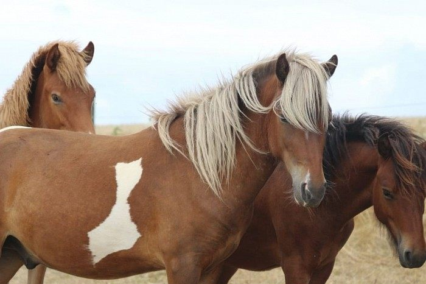
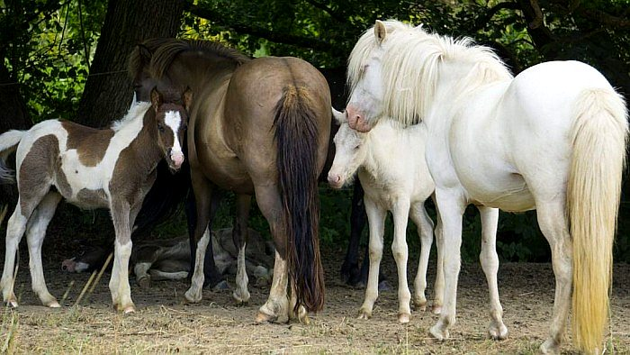

Pferde erleben.
Vertrauen entwickeln.
Pferde kennenlernen und Reiten lernen – persönlich begleitet und mit Blick auf Mensch und Tier.
Vom ersten Kontakt bis zum Reitunterricht
Der Ponyhof schafft einen ruhigen Zugang zum Pferd. Wer bereits Erfahrung mitbringt, kann seine Grundlagen und sein Verständnis im Reitunterricht weiterentwickeln.
Welche Angebote aktuell möglich sind, für wen sie passen und wann Termine frei sind, wird persönlich abgestimmt.
Ponyhof oder Reitangebot anfragen
Das passende Pferdeerlebnis finden
Vorerfahrung, Sicherheit und persönliches Ziel bestimmen, welcher Einstieg sinnvoll ist.
Pferde kennenlernen
Für Menschen, die zunächst Nähe, Verhalten und den respektvollen Umgang mit Pferden erleben möchten.
Ruhig einsteigen
Für Anfänger, die verständliche Grundlagen, Sicherheit und Vertrauen Schritt für Schritt aufbauen möchten.
Weiterentwickeln
Für Reiter mit Erfahrung, die Hilfengebung, Sitz und Zusammenspiel mit dem Pferd gezielt verbessern möchten.
Gut zu wissen: Termine, geeignete Angebote und Preise werden individuell bestätigt. Nennen Sie bei Ihrer Anfrage bitte Alter, bisherige Erfahrung und Ihren Wunsch.
In drei Schritten zum passenden Angebot
Persönlich abgestimmt, ohne unnötige Umwege.
Wunsch beschreiben
Alter, Erfahrung, Sicherheit und gewünschtes Erlebnis kurz in der Anfrage angeben.
Möglichkeit abstimmen
Die Jungenwaldmühle klärt, welches Angebot passt und welche Termine verfügbar sind.
Pferde erleben
In Ruhe ankommen, Pferd und Umgebung kennenlernen und gemeinsam starten.
Welches Angebot passt zu Ihnen?
Schreiben Sie kurz, wer teilnehmen möchte und welche Erfahrung vorhanden ist. So kann die Jungenwaldmühle gezielt antworten.
Ponyhof & Reitschule anfragen